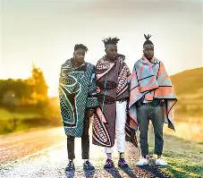
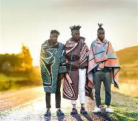

Basotho have a variety of traditional attires that can be worn in different occasions.The traditional attires may include Seshoeshoe,a traditional Basotho dress made from colored fabric with very capturing patterns and designs it is often worn at weddings.
There is also a blanket called Seanamarena,a blanket worn over the shoulders or as a shawl to provide warmth and sometimes symbolizes identity and cultural pride,the designs and colors on the blanket carries a specific meaning.Most designs of this blankets has corn/maize design and this design shows our daily meal which is pap made of maize.
Morefurther there are many more of this attires.Below we will eplore different kinds of attires featuring the Seshoeshoe and Seanamarena.Seshoeshoe is worn by only women in this culture and Seanamarena can be worn by both genders but the difference is how they wear it.Men wear Seanamarena in such a way that it covers almost the whole body while women cover only the upper position of the body.This criteria is used to differentiate between this two genders when wearing this attire in Basotho culture.In some pictures they are wearing a hat called a Mokorotlo, this hat is worn as an symbol of Basotho heritage and identity and it is made of woven grass.